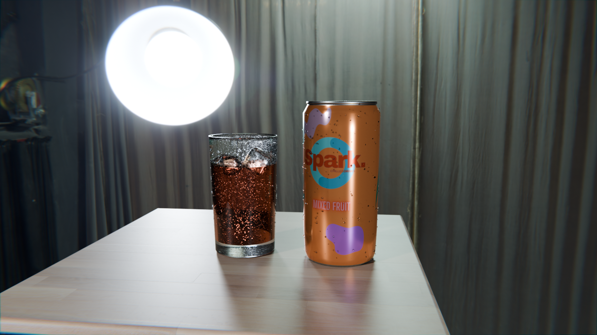
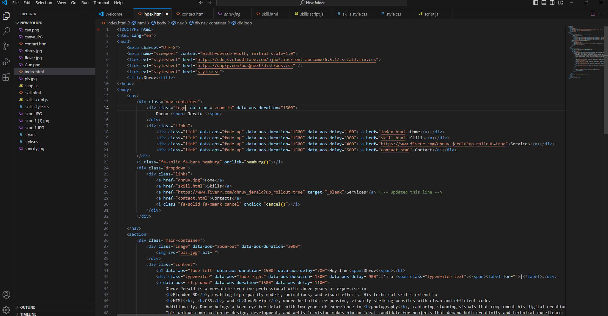
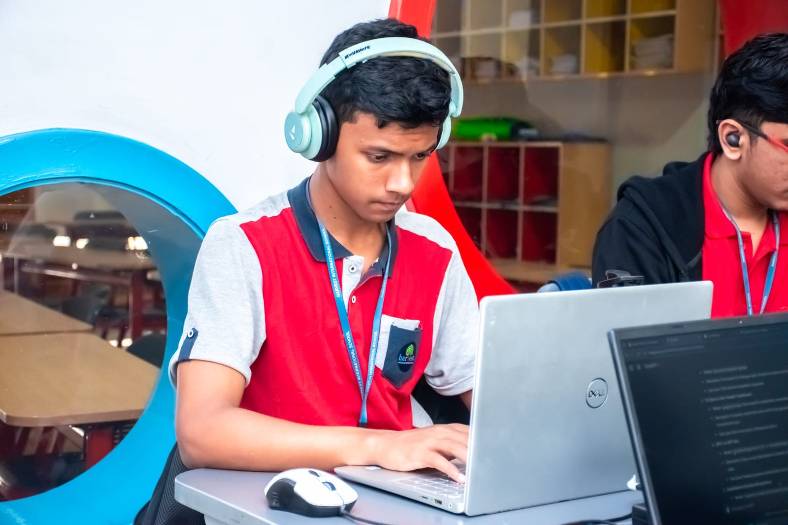

Blender 3D
Dhruv has three years of hands-on experience with Blender 3D, specializing in creating high-quality 3D models, animations, and visual effects. With a strong foundation in the software, Dhruv has developed the skills to bring creative concepts to life, whether it's designing realistic textures, creating smooth animations, or producing intricate visual effects. His expertise in Blender allows him to push the boundaries of digital artistry, making him a valuable asset for projects requiring detailed and dynamic 3D designs.


Photography
Dhruv has two years of experience in photography, capturing stunning visuals that highlight his keen eye for detail. He specializes in creating striking compositions, with a strong understanding of lighting, angles, and post-processing techniques. His work demonstrates a creative approach to storytelling through images, blending artistic vision with technical proficiency.
Html,CSS,JavaScript
Dhruv has developed strong expertise in HTML, CSS, and JavaScript through participation in two hackathons and multiple workshops. These experiences have enhanced his ability to build dynamic and responsive websites, enabling him to tackle various web development challenges effectively. Through these events, Dhruv gained hands-on experience in coding, collaborating with teams, and applying creative problem-solving skills to deliver high-quality web solutions.

